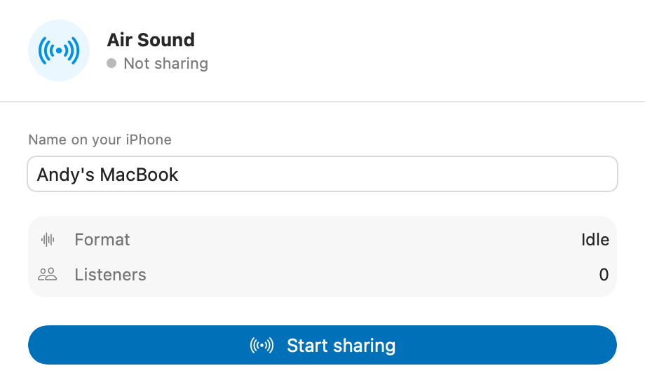
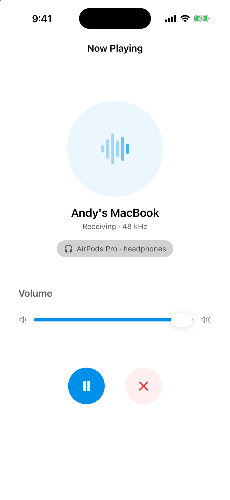
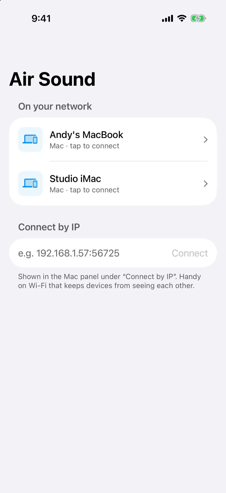

01
Start sharing from the menu bar.
Click the radio icon, give this Mac a name, and press Start sharing. macOS asks once for System Audio Recording. The panel also shows the host and port if discovery is blocked.

macOS to iPhone · local Wi-Fi
Air Sound sends your Mac's system audio to your iPhone over your own Wi-Fi. Listen on the speaker, AirPods, Bluetooth, or AirPlay. No cables, accounts, or cloud.

Plays through the iPhone speaker, AirPods, Bluetooth, or AirPlay.
How it works
The Mac captures. The iPhone plays. Both stay on your local network.
01
Click the radio icon, give this Mac a name, and press Start sharing. macOS asks once for System Audio Recording. The panel also shows the host and port if discovery is blocked.

02
Open Air Sound. Your Mac appears under On your network. Tap it and playback starts. If your Wi-Fi hides devices from each other, paste the host and port shown in the Mac panel.

That's it. Playback keeps going in the background and follows the iPhone's current output.
Under the hood
Two native apps and a shared Swift package. The Mac captures system audio with a Core Audio process tap, the iPhone receives raw PCM over TCP, and Bonjour handles discovery. There is no relay.
_airsound._tcp for discovery, then one TCP connection from the iPhone to the Mac.Install
The Mac app is a direct download. The iPhone app is an unsigned build for AltStore.
Direct download
Download for macOSThis build is ad hoc signed, not notarized with a paid Apple Developer ID. Open System Settings, go to Privacy & Security, find the message about AirSound, and choose Open Anyway. You only need to do this once. You can also build from source in Xcode.
AltStore
Download the IPAIt is not distributed through the App Store. AltStore re-signs the IPA with your own Apple ID, so the build ships unsigned. The source is in the same repository as the Mac app.
Both devices need to be on the same network. A VPN or client isolation can block discovery. In that case, use Connect by IP with the address shown in the Mac panel.
Questions
The things that come up most often when pairing the two apps.
Check that both devices are on the same Wi-Fi, that Air Sound has Local Network access in Settings → Privacy & Security → Local Network, and that the Mac is sharing. If your network isolates clients or you are on a VPN, tap Connect by IP and enter the host and port shown in the Mac panel.
The release is ad hoc signed, not notarized. Right-click the app and choose Open, or allow it in System Settings → Privacy & Security. The source is on GitHub if you prefer to build it yourself.
No. Audio is captured into memory, sent to the iPhone, and played. It is never written to disk. The Mac app also excludes its own output from the tap.
Yes. The iPhone plays through its current output route, so the speaker, wired headphones, Bluetooth, AirPods, and AirPlay all work. Routing stays on iOS.
No. The iPhone connects directly to the Mac over the local network. There is no relay or cloud service, so both devices need to reach each other.
It is distributed as an unsigned IPA for AltStore, not through the App Store. The Mac app is a direct download. Both are built from the same source in this repository.